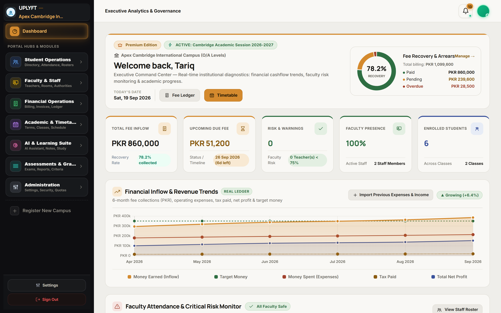
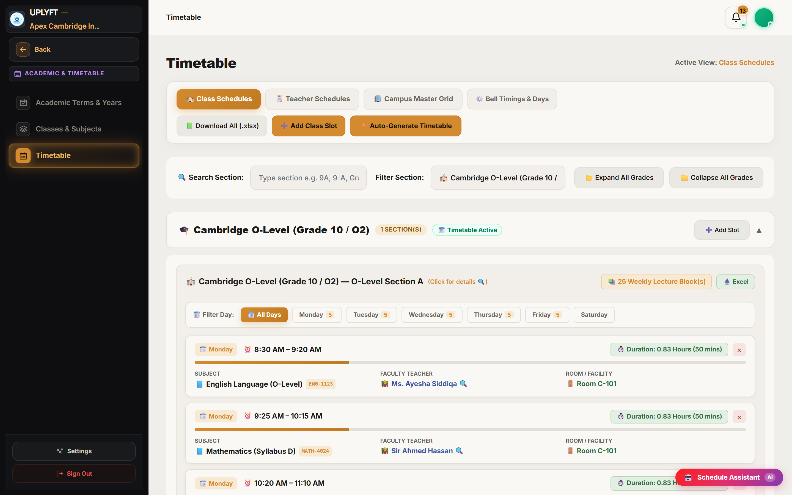
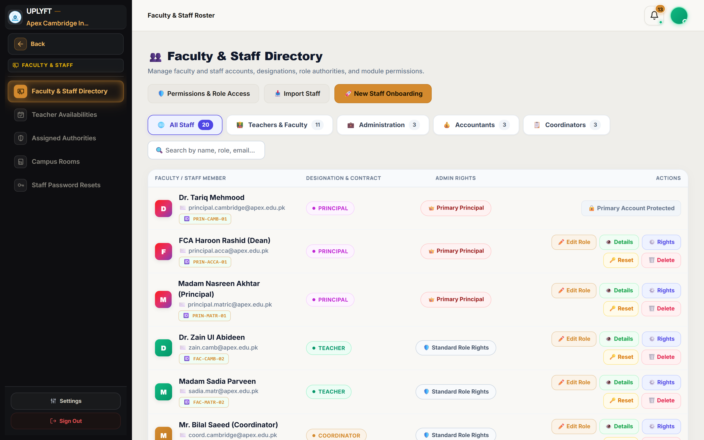
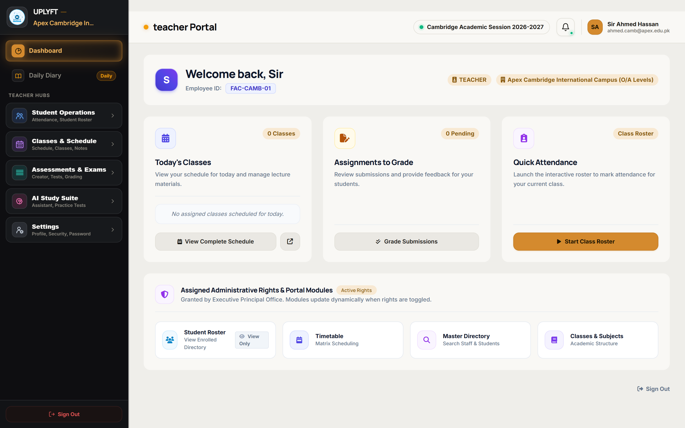
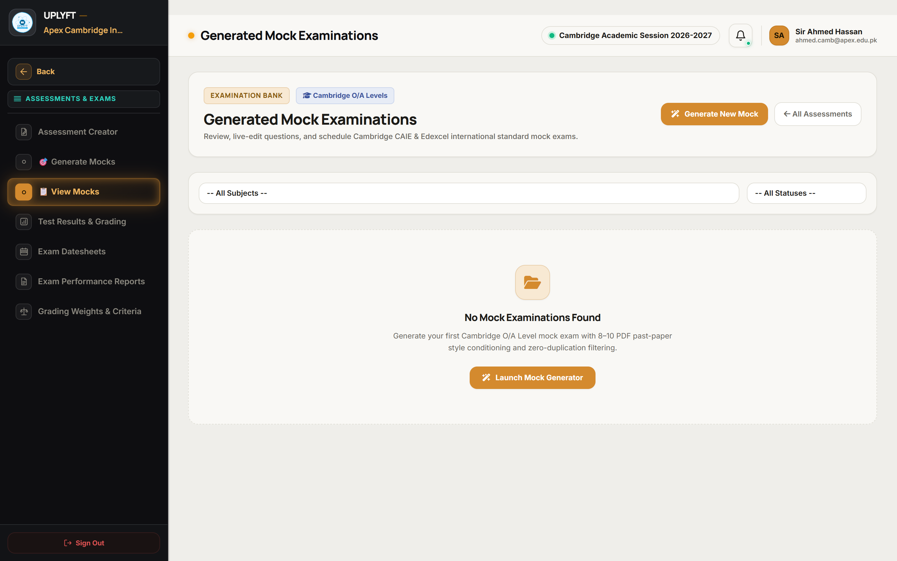
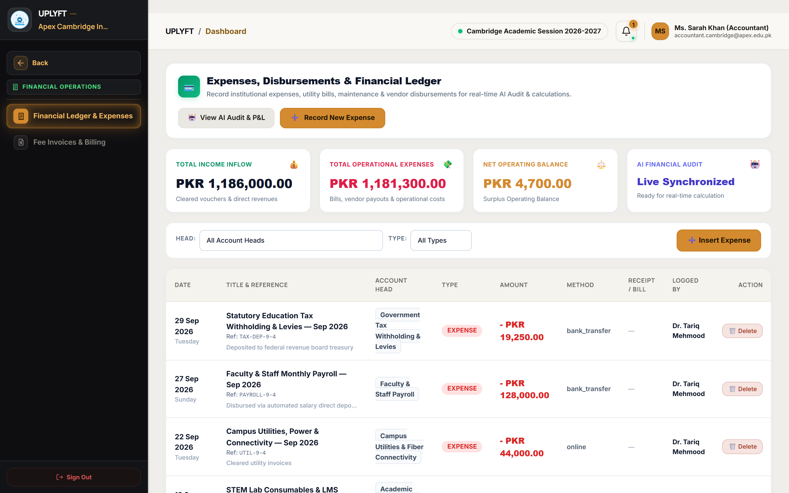
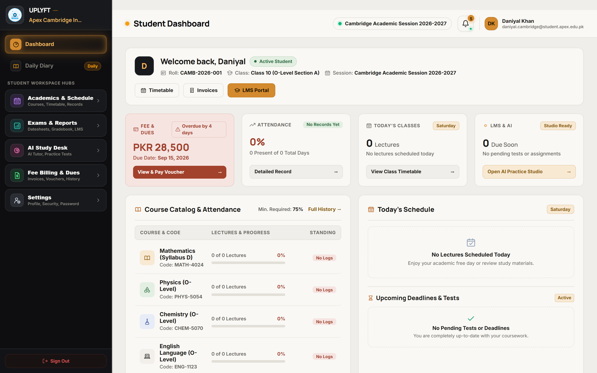
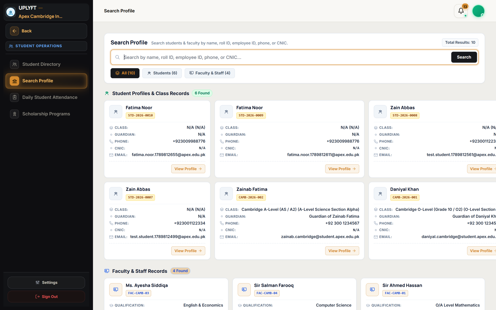

The comprehensive institutional handbook. Explores every portal, sidebar navigation hub, screen layout, button control, and step-by-step operational procedure with live UI screenshots.
Campus setup, term lifecycle, AI timetable matrix, staff delegations & master controls.
Dynamic assigned rights, student admissions, class-subject architecture & roster oversight.
Interactive attendance, daily diary, LMS content repository & Cambridge mock exam generator.
Fee voucher generation, 3-part bank challans, AI expense calculation, ledger & salary disburser.
Class schedules, fee challan downloads, 24/7 RAG AI tutor, practice quizzes & report cards.
Unified fast search, student dossiers, teacher portfolios, salary slips & password reset desk.
Executive KPIs, sidebar navigation hubs, quick actions, and campus analytics.
/principal/dashboard • Role: Principal / Executive Leadership. The command center for the entire educational campus.

| Sidebar Menu Hub | Submenu Options | Functional Scope & What It Controls |
|---|---|---|
| 🏢 Organization Hub | Campuses, Branch Settings, Multi-Tenant Toggles | Configures multi-branch campuses, address profiles, and campus-level isolation. |
| 📅 Academics Hub | Academic Terms, Classes, Dynamic Tracks, Subjects, Rooms | Manages active terms, syllabus classes, room infrastructure, and elective tracks. |
| ⚡ Timetable Hub | AI Timetable Matrix, Days & Hours, Subject Allocations | Runs multi-constraint scheduling engine, collision detector, and Excel exporter. |
| 👥 Faculty & Staff Hub | Staff Roster, Onboard Staff, Master Delegations, Rights | Manages teacher profiles, assigns roles, and delegates coordinator permissions. |
| 🎓 Admissions Hub | Register Student, Active Roster, Bulk CSV Importers | Student admissions, document uploads, class allocations, and roster exports. |
| 💰 Accounts & Fees Hub | Fee Vouchers, 3-Part Challans, General Ledger, Salaries | Issues fee vouchers, prints bank challans, AI expense calculation, and payroll. |
| 🔍 Master Directory | Global Search, Student Dossiers, Salary Slips | Live search across campus, student dossiers, teacher portfolios, and salary slips. |
| Button / Action Control | Visual Style | System Behavior & Execution Details |
|---|---|---|
| + Register Student | Register Student | Navigates directly to the multi-step student admission form at /principal/students/create. |
| + Onboard Faculty | Onboard Staff | Opens staff onboarding wizard at /principal/staff/create to register teachers and set salary. |
| Generate Invoices | Fee Vouchers | Opens batch voucher generator at /principal/invoices/create with automatic scholarship discounts. |
Classes, sections, elective tracks, rooms, constraint rules, and AI timetable generation.
/principal/timetables •
Role: Principal & Staff with timetables rights. Multi-variable constraint solver.

| Button / Action Control | Visual Style | System Behavior & Execution Details |
|---|---|---|
| Days & Hours Config | Days & Hours | Configures weekly active days (Mon–Sat), daily opening time (e.g. 08:00 AM), slot duration, and lunch breaks. |
| + Add Manual Slot | Manual Slot | Locks a specific Teacher, Subject, Section, Room, and Day/Time Slot. Overrides algorithmic assignments. |
| Auto-Generate AI Timetable | Auto-Generate | Executes the constraint solver algorithm. Balances teacher workload, room availability, and period quotas. |
| Export Matrix (Excel) | Export Excel | Exports full multi-sheet spreadsheet: Master Campus Grid, Section-wise schedules, and Teacher rosters. |
| AI Timetable Chatbot | Matrix Assistant | Natural language queries: "Find free physics teachers on Thursday period 3" or "Reassign Room 102". |
Click Days & Hours. Select teaching days (e.g. Mon–Fri), specify campus opening time, and define lunch / break intervals.
Navigate to Subject-Teacher Allocations. Assign qualified faculty to each class section and configure weekly period quotas.
Click Auto-Generate AI Timetable. The system calculates clash-free room, teacher, and section allocations in seconds.
Inspect the visual grid for highlighted conflicts. Use drag-and-drop or manual adjusters, then click Export Excel or broadcast to student portals.
Faculty onboarding, role authority presets, student admissions, and dossier records.
/principal/staff • Role: Principal Only. Delegates coordinator rights and onboards new institutional staff.

| Button / Action Control | Visual Style | System Behavior & Execution Details |
|---|---|---|
| + Onboard New Staff | Onboard Staff | Opens staff registration form. Inputs: Full Name, Email, Phone, Role, Qualification, Joining Date, and Basic Salary. |
| Master Delegated Toggle | Master Delegated | Promotes staff member to Master Delegated Admin. Enables coordinator access to the staff portal (/staff/dashboard). |
| Role Authority Presets | Apply Preset | Applies standard permission presets (e.g. Senior Coordinator, Admissions Officer, Head of Accounts). |
| Granular Checkboxes | Checkboxes | Allows granular per-module permission assignment (e.g. timetables:view vs timetables:edit, invoices:edit). |
| Save Permissions (Bulk) | Save Rights | Commits all permission checkboxes to the database. Updates user sidebar links and dashboard tiles dynamically. |
Navigate to Admissions (/principal/students/create). Enter Student Name, DOB, Gender, and Guardian details.
Assign student to target Class and Section. System automatically maps standard subjects and elective curriculum.
Upload student passport photo, birth certificate, and previous school leaving certificate for digital records.
Click Submit Registration. System creates student portal account and generates initial admission fee voucher.
Daily schedule, interactive classroom attendance register, daily diary, and LMS curriculum repository.
/teacher/dashboard • Role: Faculty & Teaching Staff. Quick access to daily classes, attendance, diary, and tests.

| Button / Action Control | Visual Style | System Behavior & Execution Details |
|---|---|---|
| Select Class & Section | Dropdown Filter | Loads student roster for selected assigned class and section. Displays student photo, roll number, and name. |
| Mark All Present | All Present | Instantly sets all students in the active roster to Present with a single click. |
| Status Radio Buttons | P / A / L / Lv | Toggles individual student attendance status: Present (Green), Absent (Red), Late (Amber), or Leave (Purple). |
| Submit & Save Attendance | Submit Roster | Saves attendance to database. Dispatches instant SMS/app notification to guardians of absent students. |
/teacher/diary • Broadcasts daily homework, classwork covered, and upcoming test announcements to students and parents.
Click + Post Daily Diary. Select Assigned Subject, Class Section, Classwork Covered, Homework Assignment, and upcoming Test Dates. Attach worksheet PDFs if needed.
Click Publish Entry. Immediately delivers diary card to enrolled students' dashboard feeds and parent mobile app notifications.
AI exam generation, Cambridge O/A level mock papers, in-place editor, and RAG AI tutor.
/lms/mocks • Role: Faculty & Academic Coordinators. Generates authentic mock examination papers.

| Button / Action Control | Visual Style | System Behavior & Execution Details |
|---|---|---|
| + Create Mock Exam | New Mock Exam | Opens exam setup dialog. Selects Subject (e.g. O-Level Physics 5054), Paper Component (Paper 1 / Paper 2), and Target Class. |
| Upload Past Papers Pool | Past Papers | Uploads past exam PDFs and marking schemes to expand the AI's question synthesis database for that subject. |
| Generate AI Mock Blueprint | Generate Paper | Generates an authentic mock exam blueprint containing structured MCQs, multi-part structured questions, diagrams, and marking rubrics. |
| In-Place Question Editor | Edit Inline | Click any question text or mark allocation directly on the preview to edit wording, replace diagrams, or modify mark schemes in real-time. |
| Print Official Question Paper | Print Paper | Renders a standardized exam booklet with school header, candidate name/roll number boxes, instructions, and formatted questions. |
| Toggle Digital Exam Mode | Digital Mode | Switches exam delivery from physical print mode to a timed digital assessment accessible directly within the student portal. |
/lms/chatbot • Students and teachers can ask natural language questions grounded strictly on uploaded school textbooks.
/lms/subjects, the AI vectorizes the text into vector embeddings. When students chat, the bot retrieves the exact book passages to answer without hallucinating.
Fee voucher generation, 3-part bank challans, AI expense calculation, ledger, and salary payroll.
/staff/accounts • Role: Accountant / Bursar. Campus financial ledger, AI expense audit, and salary payroll.

| Button / Action Control | Visual Style | System Behavior & Execution Details |
|---|---|---|
| + Single Fee Invoice | Single Voucher | Selects student, tuition fee amount, custom fee heads (Library, Lab, Sports), due date, and fine after due date. |
| + Bulk Class Invoices | Bulk Invoices | Generates monthly fee vouchers for all enrolled students in a selected class/section with automated scholarship deductions applied. |
| Print 3-Part Bank Challan | Print Challan | Renders standardized 3-part printable voucher: Student Copy, Bank Copy, and Institute Copy with barcode. |
| Mark Invoice As Paid | Mark Paid | Records payment: selects payment channel (Cash / Bank Deposit / Online), enters reference number, marks voucher paid, and generates receipt. |
| AI Expense Entry | Record Expense | Records operational disbursement: inputs amount, vendor name, invoice receipt photo, and triggers AI audit to verify anomalies or duplicate billings. |
| Auto-Disburse Salaries | Auto-Disburse | Calculates net salary for all active faculty members (Base Pay + Allowances - Deductions) and outputs a bank transfer disbursement sheet. |
Navigate to Fee Invoices (/principal/invoices/create). Select target class and specify the billing month and due date.
Add custom fee heads (Tuition, Lab, Exam Fee). The system automatically subtracts active scholarship discount percentages.
Click Bulk Generate Invoices. Click Print Challans to generate official 3-part bank vouchers for student distribution.
When fees are deposited, click Mark Paid on the invoice row. Enter bank deposit reference number and print cleared receipt.
Daylight learning dashboard, timetable, fee challan downloads, 24/7 AI tutor, and report cards.
/student/dashboard • Role: Enrolled Student & Guardian. Clean, ergonomic portal for everyday academic life.

| Student Portal Module | URL Navigation Path | Student Capabilities & Actions |
|---|---|---|
| 💰 Fee Challans & Receipts | /student/fees |
View outstanding tuition dues, download official 3-part PDF bank challans, and view cleared payment receipts. |
| 📅 Class Timetable | /student/timetable |
View interactive weekly lecture schedule, room allocations, subject codes, and download schedule PDF. |
| 📚 Digital Course Library | /student/courses |
Browse enrolled subjects, download teacher lecture notes, chapter slides, and supplementary reading materials. |
| 🤖 24/7 RAG AI Study Tutor | /student/rag/chat |
Ask natural language study questions, request step-by-step math solutions, and generate topic revision notes. |
| ✍️ Practice Diagnostic Tests | /student/practice-test |
Generate self-paced practice quizzes on any subject topic with instant scorecards and answer explanations. |
| 📖 Daily Diary & Homework | /student/diary |
View teacher homework assignments, classwork covered, and upcoming test schedules published by teachers. |
| 🏆 Term Report Cards | /student/exam-report |
View official exam results, subject letter grades, GPA, attendance percentages, and download formal report card PDF. |
Global fast search, student dossiers, teacher portfolios, salary slips archive, and password reset desk.
/principal/directory •
Role: Principal, Coordinator & Staff with directory permission.

| Button / Action Control | Visual Style | System Behavior & Execution Details |
|---|---|---|
| Global Search Input | Fast Search | Live search across all students and teachers by name, registration ID, contact phone, or guardian CNIC. |
| View Complete Dossier | Dossier | Opens full profile: academic records, fee payment history, attendance percentages, and guardian information. |
| Upload PDF Salary Slip | Upload Slip | Attaches official PDF salary slip to teacher dossier. Teachers can securely view and download their slips anytime. |
| Approve Password Reset | Execute Reset | Validates student/teacher password reset request, generates secure temporary password, and dispatches via SMS/Email. |
| Deny Reset Request | Deny | Rejects unauthorized password reset requests and logs requester IP into security audit trail. |